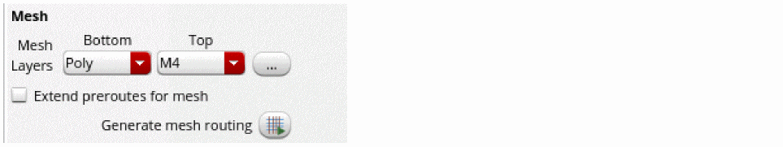
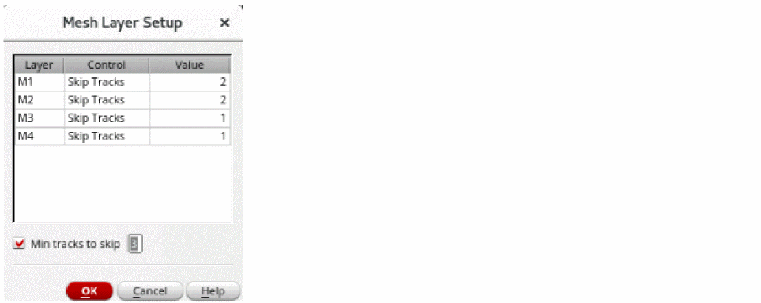

Generating Mesh for Selected Nets
When routing a complex design with many nets, it is sometimes necessary to generate mesh on certain critical nets to distribute current and reduce resistance. The steps to complete mesh routing are:
- Open a design in Layout MXL.
- Open the Navigator assistant and select Objects – Nets.
- Select a net in the Navigator assistant.
-
Choose Window – Assistants – Routing.
Alternatively, right-click anywhere on the layout window menu bar and choose Assistants – Routing. - Select the scope of the mesh to be generated as either PR Boundary, Device Array/Fig Group or Area.
-
In the Mesh section, select the bottom and top mesh layers from the Bottom and Top drop-down lists.
 -
Click the ellipses (...) button next to the Mesh layers field.
The Mesh Layer Setup Form is displayed. -
In the Mesh Layer Setup form, select either Skip Tracks, Mesh Count, or Term Align against each metal layer, as required. You can also select and modify the Min tracks to skip, if required.
 - Click OK.
- Ensure that Extend preroutes for mesh is unselected. The Extend preroutes for mesh option can be selected or unselected, as required. If selected, the mesh is extended to be drawn all the way to the edge of the longest pre routes that exists before generating the mesh.
-
Click Generate mesh routing
 to generate meshes on mesh layers.
to generate meshes on mesh layers.
Mesh is formed to connect two horizontal trunks.
Related Topics
Generating Width Spacing Patterns for Device-level Routing
Configuring Device-Level Router Settings
Checking Layout Routability after Generating Grids and Running Device Placer
Finishing Routing for Signal Nets
Return to top